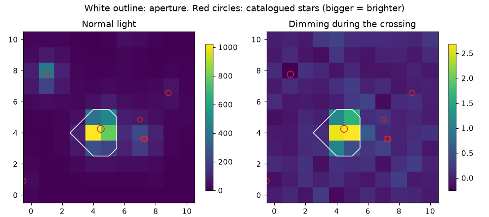

11. Pixels and neighbours: is the dip on our star?¶
1-minute summary
- What: checking the pixels to see whether a dip sits on our star or on a faint neighbour.
- Why: TESS pixels are big, so several stars share them.
- You will be able to: say what "the centre of light moved" means and why it matters.
The story
On 16 December 2025 TOI-1338 b crossed, and the pixel test asked whose light had dimmed. The dimming sat on the target's own pixels, and the centre of light moved by 0.001 arcseconds, a tenth of the chance wobble VERIFIED. One TESS pixel spans about 21 arcseconds LIKELY, so neighbours crowd in, and eight catalogued stars share this 11 by 11 patch. The test says the dip belongs to our star.
In plain words
TESS's pixels are big, so a dip in our star's light curve could really come from a faint neighbour. We look at the pixels themselves to see where the dimming sits.
What this chapter answers: how can a neighbour fake a planet, how do we tell, and what did TOI-1338's pixels say?
11.1 The intuition¶
A street has three lamps close together, and you're measuring their combined glow from far away. The glow dips. Which lamp flickered? Take a photo during the dip and one before, subtract them, and the flickering lamp is the only one that shows up in the difference. Or watch the centre of the glow: if the left lamp dims, the glow's centre shifts right.
11.2 The scientific meaning¶
- Big pixels. One TESS pixel is 21 arcseconds LIKELY. Kepler-16 has 15 catalogued stars within 1 arcminute, 4 of them bright enough to matter VERIFIED. TOI-1338's 11 × 11 pixel stamp holds 8 stars brighter than magnitude 16 VERIFIED.
- Blends. A neighbour 5 magnitudes fainter gives 1% of the light. If it's an eclipsing binary dipping by 20%, our light curve dips by 0.2%: exactly a planet-sized dip. This is one of the commonest impostors (Chapter 10, rule C6).
- Dilution. Even when the dip is on our star, neighbours' light makes it look shallower, so the planet looks smaller. SPOC estimates the share of light that's really from the target (CROWDSAP): 0.89 for Kepler-16, 0.99 for TOI-1338 VERIFIED. Cleaned PDCSAP light curves are corrected for this; raw SAP ones aren't.
- How professionals check. Kepler's validation stage used difference images and centroid offsets for every candidate LIKELY. A centroid shift is a warning sign, not a verdict: it has to be compared with the shift you'd expect if the dip were on target.
11.3 The technical explanation¶
Dilution¶
observed depth = true depth × ftarget
- ftarget: the target's share of the light in the aperture.
- Kepler-16 (f = 0.89): a true 1,000 ppm dip shows as 890 ppm. Ignore that, and the planet's size comes out √0.89 = 0.94 times too small.
The centre of the light (centroid)¶
x̄ = Σ xi Fi / Σ Fi
- Each pixel's position xi weighted by its light Fi: the balance point of the light.
What shift to expect¶
Think of just two sources: our target (share ft) and the neighbours lumped together (share fo), a distance d apart. Working through Eq. 11.2 for a small dip of depth δ (our own rough calculation):
dip on target: Δx̄ ≈ δ × ft × fo × d · dip on a neighbour: Δx̄ ≈ δ × ft × d
- If the target dims, the centre moves slightly away from it, toward the neighbours, by a tiny amount (fo is small).
- If the neighbour dims, the centre moves toward the target, about 1 ÷ fo times more. That difference is the whole test.
An honest error bar¶
The light centre wobbles all the time: pointing jitter, slow drifts. Dividing the scatter by √N assumes white noise (Chapter 7) and makes a shift look more significant than it is. Compass found that mistake in our first pixel script. The better way: slide a window of the same length over quiet stretches, measure the shift each time, and take the spread of those chance shifts as the error.
11.4 Our implementation¶
| Where | What | Status |
|---|---|---|
research/wave-3-pipeline/toi1338_pixel_check.py |
first manual check: difference image + centroid shift | error bar assumed white noise |
labs/lab7_pixels.py |
difference image, centroid shift with chance-spread error, neighbours from the TIC placed on the pixels with the file's sky map (WCS) | VERIFIED on TOI-1338 |
| automated pixel tool for G1 survivors, with the expected-shift model of Eq. 11.3 | Compass priority 3 | not tested (not built) |
Pixel files are about 50 MB per sector VERIFIED, so we only fetch them for events that survive the earlier checks.
11.5 Worked example: TOI-1338's crossing on 16 December 2025¶
From Lab 7, run on your PC VERIFIED:

- The dimming sits on the target's own pixels (row 4, columns 4 to 5). The bright neighbour at upper left (12.8 mag, 103″ away) shows none.
- Centre shift: +0.001″ in row, 0.000″ in column. Chance spread from 128 quiet windows: 0.006″ and 0.012″. So the shift is 0.1 and 0.0 times the chance spread: no shift.
- Expected (Eq. 11.3) with δ = 0.002, fo ≈ 0.01, d ≈ 60″: on target, about 0.001″; on a neighbour 60″ away, about 0.12″, which would be 10 to 20 times the chance spread and obvious.
- Verdict: consistent with the dip being on TOI-1338, as expected for a known planet. A neighbour within a few arcseconds couldn't be ruled out this way; that needs sharper images from other telescopes.
11.6 What this lets us conclude, and what it doesn't¶
- We can: rule out neighbours far enough away to shift the centre measurably, using an honest error bar.
- We can't: rule out a faint star almost exactly behind ours. Professionals use high-resolution imaging for that, which we can't do from TESS data.
- Not built yet: the automated version for G1, and the expected-shift model in code (Compass priority 3).
11.7 Check your understanding¶
The questions for this chapter are on the Part 4 review page.
Sources¶
In the claims register: F-024, F-026, F-035, F-049, F-050, F-051. Bryson et al. 2013 (PASP 125, 889) and Twicken et al. 2018 (PASP 130, 064502), checked on ADS.